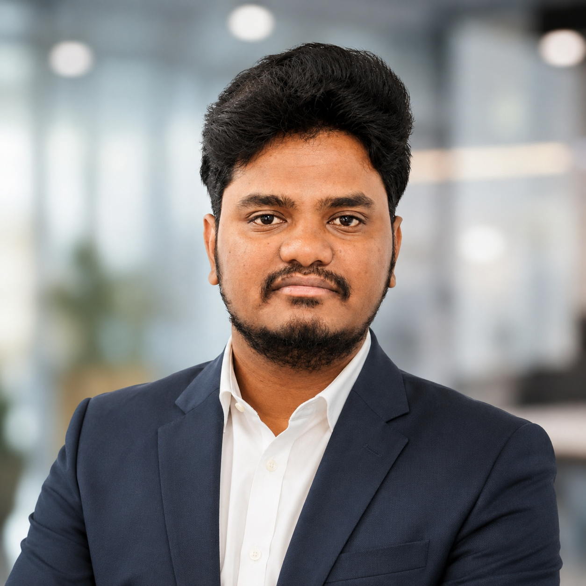

runtime reduction
PySpark tuning, partition redesign and incremental loading.

I engineer production data pipelines, lakehouse architectures and AI-ready data foundations that turn complex enterprise data into trusted analytics and GenAI experiences.
I focus on reliable systems, measurable performance improvements and data products people can trust.
PySpark tuning, partition redesign and incremental loading.
Lower selected Databricks and Snowflake compute costs.
Automated critical data quality and validation workflows.
Production pipelines spanning 10+ source systems.
Representative production systems from professional experience. Proprietary client code and data are intentionally not published.
Built ingestion, chunking and metadata-enrichment pipelines that transform internal documents, support tickets and policy content into vector embeddings indexed in Azure AI Search and consumed by Azure OpenAI.
Built and maintained 20+ production ETL/ELT pipelines processing 500 GB–1 TB daily from 10+ source systems and feeding 60+ curated Snowflake tables for analytics and ML use cases.
Reduced end-to-end pipeline runtime by 35–40% through PySpark job tuning, partitioning redesign and incremental load patterns while cutting selected compute costs by 15–20%.
Enterprise consulting experience across financial services and healthcare insurance environments.
Saint Peter's University · Jersey City, New Jersey
Open to Data Engineer, Azure Data Engineer, Databricks Data Engineer and AI Data Engineer opportunities.